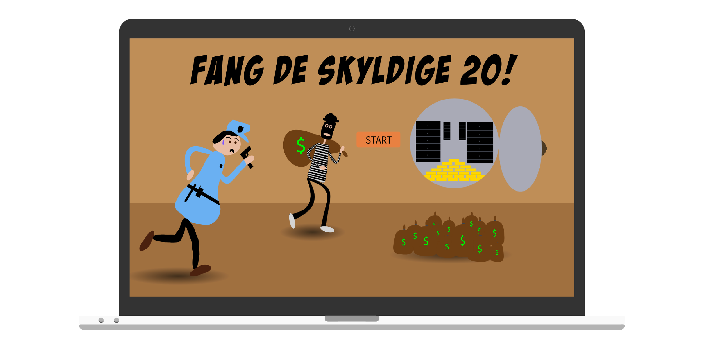
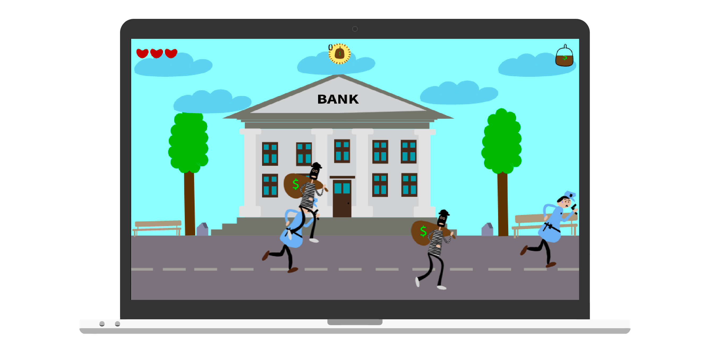
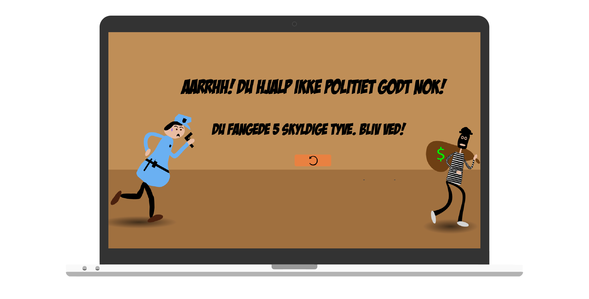

Animation
På Tema 4 skulle vi via. JavaScript, HTML, og CSS lave vores eget spil.
Vha. både aktivitetsdiagram og statemachine diagram blev det mere overskueligt ift. kodningen.
Jeg blev inspireret af den famøse barndomsleg “politi efter røver”, som man legede med sine venner udenfor,
og endte med at kalde mit spil “Fang de skyldige 20!”, hvor der dermed bliver leget lidt med ord og tal i titlen.
På den måde er man heller ikke i tvivl om hvor mange skyldige tyve, man skal fange.


